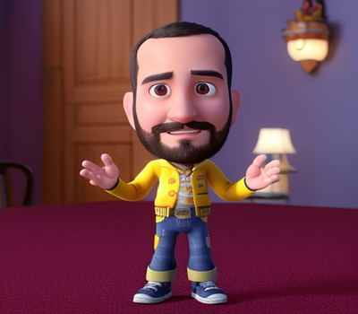

Innovación educativa
Brindo servicios de formación y desarrollo humano. Planeación y administración estratégica de negocios educativos.
✦Educación × Innovación × Datos
Ayudo a organizaciones del sector educativo, pequeñas empresas y emprendedores a dar vida a sus ideas.
Experiencias de aprendizaje con propósito.
Nuevas formas de enseñar, aprender y evaluar.
Información organizada para comprender y decidir.

Tecnología con sentido humano y educativo.
Ubicado en Medellín, CO. He trabajado con organizaciones del sector educativo en el diseño e implementación de soluciones innovadoras, cualificación en tecnologías de la información y la comunicación, y diseño y desarrollo web.
He participado en equipos interdisciplinarios de transformación digital en los procesos educativos. Me apasiona el impacto positivo que las tecnologías pueden tener en la educación, y me dedico a explorar nuevas formas de aplicarlas para mejorar la calidad de la enseñanza y el aprendizaje.
Brindo servicios de formación y desarrollo humano. Planeación y administración estratégica de negocios educativos.
✦Cualificación en tecnologías de la información y la comunicación a actores del sector educativo y empresarial.
✦Diseño de flujos, estructuras y visualizaciones que convierten información dispersa en conocimiento útil.
⌁Valoro la estructura de contenido simple, los patrones de diseño limpios y las interacciones.
↗Me gusta codificar cosas desde cero y disfruto dando vida a las ideas en el navegador.
↗Integro plataformas de Ecommerce, pasarelas de pago, plantillas personalizadas y más.
↗Soluciono problemas y requerimientos de hardware y software usando técnicas rigurosas de soporte técnico.
↗Experiencia construida entre tecnología, formación y colaboración.
Proyectos de desarrollo, innovación y soporte que conectan problemas reales con soluciones claras.
No hay proyectos publicados en esta categoría por ahora.
El aprendizaje personalizado, basado en proyectos y las realidades extendidas están cambiando la educación.
Acceso eficiente a información, personalización e interacción entre estudiantes y profesores.
Técnicas de juego para fortalecer la motivación y desarrollar habilidades importantes.
¿Tienes una idea educativa, tecnológica o basada en datos? Hablemos de cómo convertirla en una experiencia clara y útil.
Escríbeme un correo ↗Medellín, Colombia